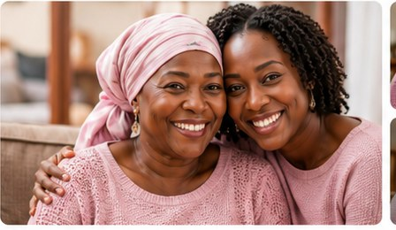
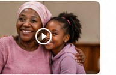
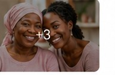

Kids & Family
Kids & FamilySupport Kids with Cancer
Care, essentials and support for children fighting cancer.
R72,310 raised
Donate


Every act of kindness brings Kayla hope, strength and the chance to keep fighting. Help us stand with her on this journey.
Kayla Jacobs is a true fighter, mother, daughter and friend. After a breast cancer diagnosis, her world changed in an instant. She has faced every challenge with courage and grace, but the road ahead is long. Your support will help Kayla focus on healing, spending time with family and staying strong.
Chemotherapy, surgery, medication and doctor visits.
Helping Kayla get to and from treatments safely.
Groceries, utilities and essential living expenses.
Counselling and wellness resources.
Kayla’s sister • Cape Town, South Africa
Our family is beyond grateful for the support during this difficult time. Every contribution helps Kayla focus on healing.
Kids & FamilyCare, essentials and support for children fighting cancer.
 Breast Cancer
Breast CancerHelp Nomsa access urgent treatment and stay strong for her family.
 Women’s Health
Women’s HealthGuidance and resources for caregivers of cancer patients.